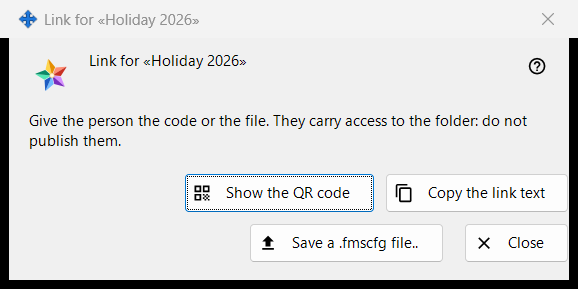
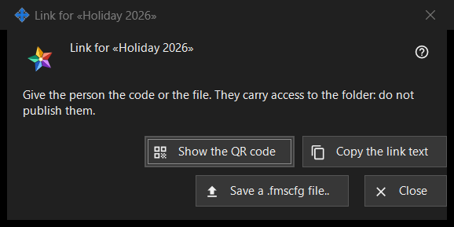

Link for a folder
What this is for
Hands one published folder over to a person with no account on the exchange server: as a QR code, as link text and as a .fmscfg file. It opens after 'Create a link..' or 'New link..' in the group 'My shares in the exchange account', and from 'Show QR / Code..' in the 'Give access outside..' window of a folder. In the current program both commands are disabled, because access for people outside the account is not offered; this page describes what the window shows once a link exists.


In this order
- Select a published folder and press 'Create a link..' (or 'New link..' to replace an old one).
- Read the note at the top.
- Hand the link over with 'Show the QR code', 'Copy the link text' or 'Save a .fmscfg file..'.
- Press 'Close'.
The elements
When the window is available
The window exists only for a link that was just made or already exists. While access for people outside the account is not offered, 'Create a link..' and 'New link..' are disabled, a note under them gives the reason and the window does not open; 'Show QR / Code..' is disabled too. 'Remove the link' stays available.
The note at the top
'Give the person the code or the file. They carry access to the folder: do not publish them.' Whoever holds the QR code, the link text or the file can open that folder. The link text is never shown on screen.
Show the QR code
Opens the QR picture in a zoom window. The button is present only when a QR code could be made; a link text too large for a QR code is answered with 'The code is too large for a QR code - use the file.'.
Copy the link text
Puts the link text (it begins with FMSSFTP2:) on the clipboard through a protected route that keeps it out of the Windows clipboard history and the cloud clipboard, and answers 'The link text was copied.'. Present only when the link has a text.
Save a .fmscfg file..
Saves a settings file for this one folder, readable by its owner only. The window reports 'File saved:' with the path, or 'The file could not be saved.'. Present only when the file could be built.
New link and Remove the link
Both belong to the group, not to this window, and both ask first with No as the default answer: 'New link..' warns that every earlier QR code and file will stop working, 'Remove the link' that every QR code and file handed out with it will stop working.
Close
Closes the window and drops the link text, the file contents and the QR picture from it.
Manager settings · SFTP sharing settings · Exchange server settings